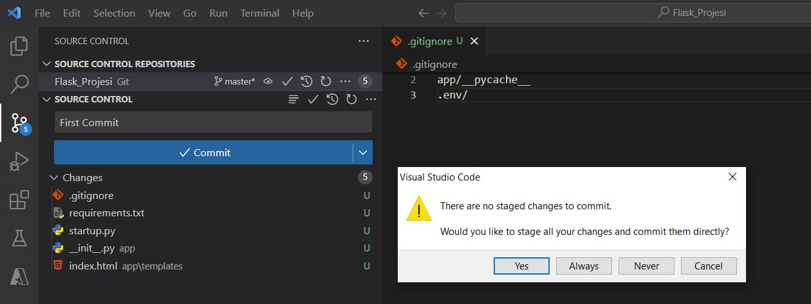

Bu yazı, bir Flask uygulamasının VS Code üzerinden Github ve Azure üzerinde nasıl yayınlanacağına dair bir rehber olması amacyla tasarlanmıştır. Burada amaç Flask uygulanmasına odaklanmak değil, hazır bir uygulamanın github ve cloud a servis edilmesi ile ilgilidir.
Hazırlıklar
-
Github Hesabının Oluşturulması
Flask uygulamasını Github üzerinden paylaşmak için bir Github hesabına ihtiyacımız var. Hesabınız yoksa Github'a kaydolmak için https://github.com/ adresine gidip kayıt işlemini tamamlayabilirsiniz.
-
VS Code Kurulumu
Flask uygulamasının kodlanması, Github'a yüklenmesi ve Azure Ortamı ile etkileşim VS Code üzerinde yapılacağı için VS Code'u bilgisayarınıza indirin ve yükleyin.
-
Sanal ortamın yaratılması
Öncelikle flask projesi için bir klasör yaratılmalıdır. Sonrasında bu klasör içine girip terminale geçiş yapılmalıdır.
Aşağıdaki komutlar ile uygulama bağımlılıklarının depolanacağı bir sanal ortamın oluşturulmasına sağlanacaktır
python -m venv .envSanal ortamı aktif hale getirin:
Windows içinenv\Scripts\activateLinux içinsource env/bin/activateSanal ortamda Flask paketini yüklemek için aşağıdaki komutu kullanacağız:
Ayrıca, uygulamanızda kullanacağınız diğer paketleri de benzer şekilde yükleyebilirsiniz.pip install flaskPaketleri yükledikten sonra, pip freeze komutunu kullanarak tüm bağımlılıkları requirements.txt dosyasına kaydedeceğiz:
pip freeze > requirements.txt -
Flask Uygulamasının Kodlanması
Proje klasörü içinde "app" adı altında bir klasör yaratcağız. Sonrasında onun içinde "static" ve "templates" adı altında 2 klasör daha yaratacağız. Ayrıca 3 tane de dosya yaratacağız. Görünüm şu şekildedir.
Kod içeren dosyalar ve kodlar aşağıdaki gibidir.
__init__.pyfrom flask import Flask, render_template app = Flask(__name__) @app.route('/') def index(): return render_template('index.html') if __name__ == "__main__": app.run(port=5000, debug=True)
index.html<!DOCTYPE html> <html> <head> <title>Merhaba Giriş Sayfası</title> <meta name="viewport" content="width=device-width, initial-scale=1"> <link rel="stylesheet" href="https://stackpath.bootstrapcdn.com/bootstrap/4.1.3/css/bootstrap.min.css"> </head> <body> <div class="container-fluid bg-light py-3"> <div class="container"> <div class="row"> <div class="col-md-12 text-center"> <h1 class="display-3 mb-2">Merhaba Flask ve Bootstrap!</h1> <p class="lead mb-5">Bu, Flask ve Bootstrap ile oluşturulan bir örnek sayfadır.</p> <a href="#" class="btn btn-primary btn-lg">Daha Fazla</a> </div> </div> </div> </div> <div class="container-fluid bg-dark text-white py-3"> <div class="container"> <div class="row"> <div class="col-md-12 text-center"> <br> <p class="mb-0">Daha fazla Flask ve Bootstrap örneği için <a href="#">buraya</a> tıklayın.</p> <br> </div> </div> </div> </div> </body> </html>
startup.pyfrom app import appKodlamayı bitirdiğimizde projeyi çalıştırabiliriz.
python __init__.py(env) D:\Workspace\Python\Flask\Flask_Projesi\app>python __init__.py * Serving Flask app '__init__' * Debug mode: on WARNING: This is a development server. Do not use it in a production deployment. Use a production WSGI server instead. * Running on http://127.0.0.1:5000 Press CTRL+C to quit * Restarting with stat * Debugger is active! * Debugger PIN: 278-563-770 127.0.0.1 - - [17/Mar/2023 00:04:28] "GET / HTTP/1.1" 200 - -
Git yapılandırması
Projemizin Github yapılandırması bu aşamada olacak. Sonrasında yapacağımız her commit ile kodlarımız Github Repository'e atılmış olacak.
Öncelikle Github a yüklenmesini istemediğimiz dosya ve klasörlerin adını ".gitignore" dosyasına eklemeliyiz. Örneğin sanal ortam yada bir takım cache amaçlı klasörlerin Repository'e atılmasına gerek yoktur.
VS Code'un "Source Control" sekmesine gidip oradan "Initialize Repository" diyerek dosya ve klasölerimizi Git kapsamına almış olacağız. Esasında git yapılandırmasını terminalden de yapabiliriz ama burada VS Code'un bize sağladığı kolaylıktan faydalanmış olacağız.

Initialize Repository dediğimizde VS Code bizim için git yapılandırmasını hazır hale getirir. Esasında klasör içinde ".git" adında gizli bir klasör yaratılır. Commit tuşuna basmadan önce tuşun üstündeki alana "Açıklama girilir.Her commit aslında kodumuzun bir aşamasıdır ve ilerde bu aşamalar arasında geçiş yapma şansımız olacaktır. Bu nedenle aşamaların ne olduğunun anlaşılır bir şekilde yazılması önemlidir.
Commit tuşuna bastığımızda aşağıdaki gibi bir soru karşımıza gelir.
Bu mesaj, henüz değişikliklerin kaydedilmediğini veya sahneye konulmadığını (staged) belirtiyor. "There are no staged changes to commit" mesajı, değişikliklerin henüz sahneye konulmadığını gösterirken, "Would you like to stage all your changes and commit them directly?" mesajı, değişikliklerin sahneye konulup commit edilmesi için sizden onay istiyor.
Git'te, dosyaların değişikliklerini kaydetmek için iki aşama vardır. İlk olarak, değişikliklerinizi "sahneye koymalısınız" (stage), yani dosyaları değişiklikler için hazır hale getirmelisiniz. Bu işlem, git add komutuyla yapılır. Daha sonra, değişiklikleri "commit" ederek (yani kaydederek) Git deposuna göndermelisiniz. Bu işlem, git commit komutuyla yapılır.
Eğer henüz değişiklikleri sahneye koymadıysanız ve git commit komutunu çalıştırırsanız, Git size "There are no staged changes to commit" mesajını verir çünkü değişiklikler henüz sahneye konulmadı. Bu nedenle, Git değişiklikleri sahneye koymak isteyip istemediğinizi sorar.
Eğer "yes" derseniz, Git tüm değişiklikleri sahneye koyar ve hemen ardından commit işlemini gerçekleştirir. Böylece, hem dosyaların değişiklikleri kaydedilir hem de Git deposuna gönderilir.
Peki ne yapsaydık bu soru karşımıza gelmezdi
"Source Control" yan tarafındaki üç nokta (...) işaretine basınca açılan menüde Changes sekmesi altında "Stage All Changes" dersek bu işlem değişikliklerin sahneye (staging area) konmasını sağlar.
İlk commit işleminde dosyalar olduğu gibi içeri alınır ancak sonrasında her bir değişiklik loglanır bir nevi. Dosyalardaki bu değişikliğin detayı istenirse incelenebilir

Şu ana kadar yapılanların hepsi lokalde gizli ".git" klasörü içinde yapıldı. Şimdi projemizi artık remote bir repository'e atabiliriz. Bunun için Publish Branch diyeceğiz. Eğer VS Code'da Github'a login değilsek login olmamız istenecek
Sonrasında Github bize Repository adını soracak (Default değer olarak mevcut klasörümüzün adı gelir ama bunu değiştirebiliriz)
Github'da projemizin yaratıldığını görebiliriz

Dikkatli bakarsak "static" klasörünün Github'da olmadığını görürüz. Çünkü aslında git commit esnasında da bu klasör eklenmemişti.
Bunun nedeni, Git, boş bir klasörü doğrudan bir commit'e eklemeyi desteklemez. Böyle bir klasörü repository'nin içinde bulundurmak isterseniz, klasör içinde boş da olsa bir dosya oluşturmanız gerekir. Bu şekilde klasörü de stage'e alabilirsiniz.
Uygulamanın görüntüsü şu şekildedir.

Azure Hesabının Oluşturulması
Flask uygulamasının Azure ortamına deploy edilebilmesi için bir Azure hesabına ihtiyacımız var. Azure'a https://azure.microsoft.com/tr-tr/free/ adresinden kayıt olabilirsiniz.